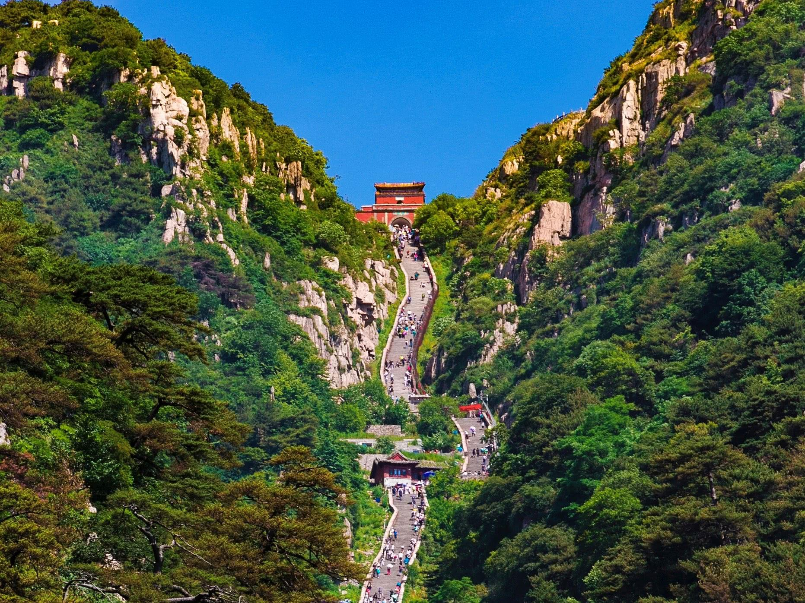
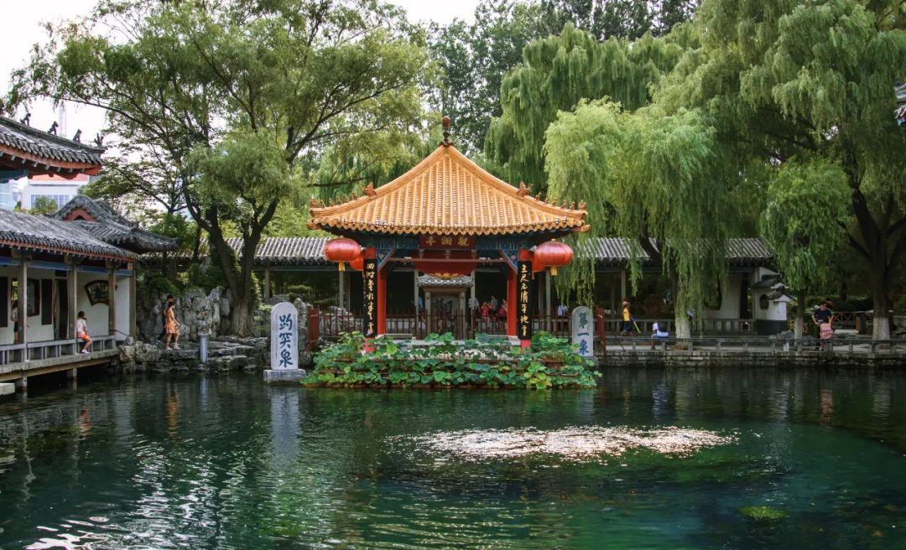

-

泰山
泰山，又名岱山、岱宗、岱岳、东岳、泰岳，为五岳之一，有“五岳之首”“天下第一山”之称。位于山东省中部，隶属于泰安市 ，绵亘于泰安、济南、淄博三市之间，总面积25000公顷，主峰玉皇顶海拔约1545米。
1982年，泰山被列入第一批国家级风景名胜区。1987年，泰山被联合国教科文组织批准列为中国第一个世界文化与自然双重遗产。2002年，泰山被评为“中华十大文化名山”之首。2005年，泰山成为国家地质公园。2006年，泰山因其独特的地质价值，成为世界地质公园。2007年3月，泰山被评为国家AAAAA级旅游景区；12月，泰山被命名为中国首座“中国书法名山”。
自秦始皇起至清代，先后有13代帝王依次亲登泰山封禅或祭祀，另有24代帝王遣官祭祀72次。山体上既有寺庙、宫、观等古建筑群29处，古遗址128处，有大小碑碣、摩崖石刻2000余处。
-

趵突泉
趵突泉（BaotuSpring），济南三大名胜之一，位于山东省济南市历下区，东临泉城广场，北望五龙潭，面积达158亩，位居济南七十二名泉之冠。乾隆皇帝南巡时因趵突泉水泡茶味醇甘美，曾册封趵突泉为“天下第一泉”。也是最早见于古代文献的济南名泉。
趵突泉与千佛山、大明湖并称为济南三大名胜。2013年，以趵突泉为代表的“天下第一泉景区”成为国家AAAAA级旅游景区。2016年9月5日下午，趵突泉泉群省级地质公园揭牌开园。
趵突泉泉眼位于趵突泉公园内的泺源堂前。民国二十年（1931年）四周用石砌岸。几经变化，形成长方形泉池，长30米，宽18米，深2.2米。北临泺源堂，西傍观澜亭，东架来鹤桥，南有长廊围合。泉水从地下石灰岩溶洞中涌出，每天涌出7万立方米泉水，泉水有三个出水口，最大涌水量为16.2万立方米/天。趵突泉水一年四季恒定在18℃左右。趵突泉周边的名胜古迹有泺源堂、观澜亭、尚志堂、李清照纪念堂、李苦禅纪念馆等景点。
-

孔庙
曲阜孔庙，又称“阙里至圣庙”，位于曲阜市中心鼓楼西侧300米处，是祭祀中国古代著名思想家和教育家孔子的祠庙。始建于鲁哀公十七年（前478年），历代增修扩建。
曲阜孔庙被建筑学家梁思成称为世界建筑史上的“孤例”。1961年，国务院把“三孔”列为全国重点文物保护单位；1994年被联合国教科文组织列为“世界文化遗产”。现为国家AAAAA级景区，与北京故宫、承德避暑山庄并列为中国三大古建筑群； 与南京夫子庙、北京孔庙和吉林文庙并称为中国四大文庙。
曲阜孔庙以孔子故居为庙，岁时奉祀。西汉以来历代帝王不断给孔子加封谥号，孔庙的规模也越来越大，成为全国规模最大的孔庙。现存的建筑群绝大部分是明、清两代完成的，占地327亩，前后九进院落。庙内有殿堂、坛阁和门坊等464间。四周围以红墙，四角配以角楼，是仿北京故宫样式修建的。与相邻的孔府、城北的孔林合称“三孔”。
-

台儿庄
台儿庄古城，位于京杭大运河的中心点，坐落于山东省枣庄市台儿庄区和鲁苏豫皖四省交界地带。古城肇始于秦汉，发展于唐宋，繁荣于明清，有“天下第一庄”之称（清乾隆赐）。
古城占地2平方公里，11个功能分区、8大景区和29个景点，是中国国内规模最大的古城。 现为国家AAAAA级旅游景区，有“中国最美水乡”之誉。
台儿庄古城，被世界旅游组织称为“活着的古运河”、“京杭运河仅存的遗产村庄”。台儿庄古城内有古河道、古码头、中华古水城、台儿庄大战纪念馆、海峡两岸交流基地，与波兰首都华沙同属世界上仅有的两座因第二次世界大战炮火毁坏而作为世界文化遗产重建的城市。